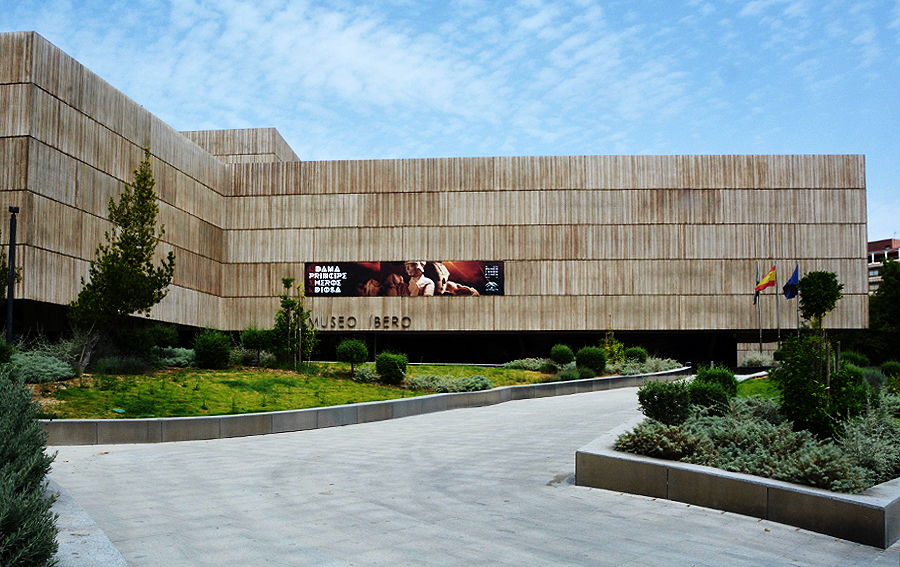

El museo alberga la mayor colección de arte ibérico del mundo, incluyendo varias colecciones existentes en el Museo de Jaén y otros fondos, y aquellas que proporcionen los nuevos hallazgos arqueológicos, con intención de convertirse en un referente internacional.
La idea se gestó en 1997 a manos de la Asociación Amigos de los Íberos, haciéndose pública a través de una campaña de carteles en el edificio que ocupaba el museo actual y siendo apoyada públicamente por Felipe López y Carmen Calvo. El edificio se encuentra situado en el Paseo de la Estación, en el lugar que ocupaba la antigua Prisión Provincial de Jaén. En un principio este inmueble fue el destinado a acoger la sede del museo; sin embargo, la prisión quedó estructuralmente dañada tras las obras del cercano aparcamiento Avenida, y acabó siendo finalmente demolida.
Tras varios retrasos, se previó que el museo abriese al público en junio de 2017 con una gran exposición temporal, pero de nuevo hubo más retrasos debido a que la Junta de Andalucía pidió la cesión del terreno del museo al Gobierno, cuando solo tenía la cesión del edificio en sí. Finalmente abrió al público el 11 de diciembre de 2017 como primer museo íbero del mundo con la exposición temporal "La Dama, el Príncipe, el Héroe y la Diosa", exhibición que se mostrará durante seis meses. A su inauguración acudió el rey Felipe VI, la presidenta de la Junta de Andalucía, Susana Díaz, y el alcalde de Jaén, Francisco Javier Márquez Sánchez. Los días previos a la inauguración se realizó un videomapping en su fachada con diferentes pases para promocionarlo. La colección permanente todavía queda pendiente de ser negociada con el Gobierno español.
La mayoría de sus colecciones provienen del Museo de Jaén, así como de los yacimientos íberos de Jaén como Cerrillo Blanco (Porcuna), Cástulo (Linares), Puente Tablas (Jaén), Cerro del Pajarillo (Huelma), Atalayuelas (Fuerte del Rey) o la cámara sepulcral de Toya. Del mismo modo se seleccionarán objetos íberos de los museos arqueológicos de Almería, Sevilla, Córdoba, Granada y Linares.
También se trasladarán tres exvotos del yacimiento de Torreparedones (Baena, Córdoba).Se espera que formen parte de una nueva colección que tratará sobre los animales y su relación con las tumbas íberas.
| Precio | |
|---|---|
| Entrada General | 1.5€ |
| Ciudadanos UE y miembros del ICOM | Gratis |
| Horario | |
|---|---|
| Martes a Sábados | 09:00-21:00 |
| Domingos, Festivos y Lunes visperas de festivos | 09:00-15:00 |